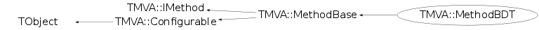

class TMVA::MethodBDT: public TMVA::MethodBase
Analysis of Boosted Decision Trees Boosted decision trees have been successfully used in High Energy Physics analysis for example by the MiniBooNE experiment (Yang-Roe-Zhu, physics/0508045). In Boosted Decision Trees, the selection is done on a majority vote on the result of several decision trees, which are all derived from the same training sample by supplying different event weights during the training. Decision trees: Successive decision nodes are used to categorize the events out of the sample as either signal or background. Each node uses only a single discriminating variable to decide if the event is signal-like ("goes right") or background-like ("goes left"). This forms a tree like structure with "baskets" at the end (leave nodes), and an event is classified as either signal or background according to whether the basket where it ends up has been classified signal or background during the training. Training of a decision tree is the process to define the "cut criteria" for each node. The training starts with the root node. Here one takes the full training event sample and selects the variable and corresponding cut value that gives the best separation between signal and background at this stage. Using this cut criterion, the sample is then divided into two subsamples, a signal-like (right) and a background-like (left) sample. Two new nodes are then created for each of the two sub-samples and they are constructed using the same mechanism as described for the root node. The devision is stopped once a certain node has reached either a minimum number of events, or a minimum or maximum signal purity. These leave nodes are then called "signal" or "background" if they contain more signal respective background events from the training sample. Boosting: The idea behind adaptive boosting (AdaBoost) is, that signal events from the training sample, that end up in a background node (and vice versa) are given a larger weight than events that are in the correct leave node. This results in a re-weighed training event sample, with which then a new decision tree can be developed. The boosting can be applied several times (typically 100-500 times) and one ends up with a set of decision trees (a forest). Gradient boosting works more like a function expansion approach, where each tree corresponds to a summand. The parameters for each summand (tree) are determined by the minimization of a error function (binomial log- likelihood for classification and Huber loss for regression). A greedy algorithm is used, which means, that only one tree is modified at a time, while the other trees stay fixed. Bagging: In this particular variant of the Boosted Decision Trees the boosting is not done on the basis of previous training results, but by a simple stochastic re-sampling of the initial training event sample. Random Trees: Similar to the "Random Forests" from Leo Breiman and Adele Cutler, it uses the bagging algorithm together and bases the determination of the best node-split during the training on a random subset of variables only which is individually chosen for each split. Analysis: Applying an individual decision tree to a test event results in a classification of the event as either signal or background. For the boosted decision tree selection, an event is successively subjected to the whole set of decision trees and depending on how often it is classified as signal, a "likelihood" estimator is constructed for the event being signal or background. The value of this estimator is the one which is then used to select the events from an event sample, and the cut value on this estimator defines the efficiency and purity of the selection.
Function Members (Methods)
public:
protected:
private:
| Double_t | AdaBoost(vector<TMVA::Event*>, TMVA::DecisionTree* dt) |
| Double_t | AdaBoostR2(vector<TMVA::Event*>, TMVA::DecisionTree* dt) |
| Double_t | Bagging(vector<TMVA::Event*>, Int_t iTree) |
| void | BoostMonitor(Int_t iTree) |
| Double_t | GetGradBoostMVA(TMVA::Event& e, UInt_t nTrees) |
| Double_t | GetMvaValue(Double_t* err, Double_t* errUpper, UInt_t useNTrees) |
| void | GetRandomSubSample() |
| Double_t | GetWeightedQuantile(vector<std::pair<Double_t,Double_t> > vec, const Double_t quantile, const Double_t SumOfWeights = 0.0) |
| Double_t | GradBoost(vector<TMVA::Event*>, TMVA::DecisionTree* dt, UInt_t cls = 0) |
| Double_t | GradBoostRegression(vector<TMVA::Event*>, TMVA::DecisionTree* dt) |
| virtual void | Init() |
| void | InitGradBoost(vector<TMVA::Event*>) |
| void | PreProcessNegativeEventWeights() |
| Double_t | PrivateGetMvaValue(TMVA::Event& ev, Double_t* err = 0, Double_t* errUpper = 0, UInt_t useNTrees = 0) |
| Double_t | RegBoost(vector<TMVA::Event*>, TMVA::DecisionTree* dt) |
| void | UpdateTargets(vector<TMVA::Event*>, UInt_t cls = 0) |
| void | UpdateTargetsRegression(vector<TMVA::Event*>, Bool_t first = kFALSE) |
Data Members
public:
| enum TMVA::MethodBase::EWeightFileType { | kROOT | |
| kTEXT | ||
| }; | ||
| enum TObject::EStatusBits { | kCanDelete | |
| kMustCleanup | ||
| kObjInCanvas | ||
| kIsReferenced | ||
| kHasUUID | ||
| kCannotPick | ||
| kNoContextMenu | ||
| kInvalidObject | ||
| }; | ||
| enum TObject::[unnamed] { | kIsOnHeap | |
| kNotDeleted | ||
| kZombie | ||
| kBitMask | ||
| kSingleKey | ||
| kOverwrite | ||
| kWriteDelete | ||
| }; |
public:
| Bool_t | TMVA::MethodBase::fSetupCompleted | is method setup |
| const TMVA::Event* | TMVA::MethodBase::fTmpEvent | ! temporary event when testing on a different DataSet than the own one |
protected:
| TMVA::Types::EAnalysisType | TMVA::MethodBase::fAnalysisType | method-mode : true --> regression, false --> classification |
| UInt_t | TMVA::MethodBase::fBackgroundClass | index of the Background-class |
| vector<TString>* | TMVA::MethodBase::fInputVars | vector of input variables used in MVA |
| vector<Float_t>* | TMVA::MethodBase::fMulticlassReturnVal | holds the return-values for the multiclass classification |
| Int_t | TMVA::MethodBase::fNbins | number of bins in input variable histograms |
| Int_t | TMVA::MethodBase::fNbinsH | number of bins in evaluation histograms |
| Int_t | TMVA::MethodBase::fNbinsMVAoutput | number of bins in MVA output histograms |
| TMVA::Ranking* | TMVA::MethodBase::fRanking | pointer to ranking object (created by derived classifiers) |
| vector<Float_t>* | TMVA::MethodBase::fRegressionReturnVal | holds the return-values for the regression |
| UInt_t | TMVA::MethodBase::fSignalClass | index of the Signal-class |
private:
| Double_t | fAdaBoostBeta | beta parameter for AdaBoost algorithm |
| TString | fAdaBoostR2Loss | loss type used in AdaBoostR2 (Linear,Quadratic or Exponential) |
| Bool_t | fAutomatic | use user given prune strength or automatically determined one using a validation sample |
| Bool_t | fBaggedGradBoost | turn bagging in combination with grad boost on/off |
| TString | fBoostType | string specifying the boost type |
| Double_t | fBoostWeight | ntuple var: boost weight |
| vector<double> | fBoostWeights | the weights applied in the individual boosts |
| Bool_t | fDoBoostMonitor | create control plot with ROC integral vs tree number |
| Double_t | fErrorFraction | ntuple var: misclassification error fraction |
| vector<TMVA::Event*> | fEventSample | the training events |
| Double_t | fFValidationEvents | fraction of events to use for pruning |
| vector<TMVA::DecisionTree*,allocator<TMVA::DecisionTree*> > | fForest | the collection of decision trees |
| Int_t | fITree | ntuple var: ith tree |
| Bool_t | fInverseBoostNegWeights | boost ev. with neg. weights with 1/boostweight rathre than boostweight |
| UInt_t | fMaxDepth | max depth |
| Double_t | fMinLinCorrForFisher | the minimum linear correlation between two variables demanded for use in fisher criterium in node splitting |
| TTree* | fMonitorNtuple | monitoring ntuple |
| Int_t | fNCuts | grid used in cut applied in node splitting |
| UInt_t | fNNodesMax | max # of nodes |
| Int_t | fNTrees | number of decision trees requested |
| TString | fNegWeightTreatment | variable that holds the option of how to treat negative event weights in training |
| Bool_t | fNoNegWeightsInTraining | ignore negative event weights in the training |
| Int_t | fNodeMinEvents | min number of events in node |
| Double_t | fNodePurityLimit | purity limit for sig/bkg nodes |
| Bool_t | fPairNegWeightsGlobal | pair ev. with neg. and pos. weights in traning sample and "annihilate" them |
| Bool_t | fPairNegWeightsInNode | randomly pair miscl. ev. with neg. and pos. weights in node and don't boost them |
| Bool_t | fPruneBeforeBoost | flag to prune before boosting |
| TMVA::DecisionTree::EPruneMethod | fPruneMethod | method used for prunig |
| TString | fPruneMethodS | prune method option String |
| Double_t | fPruneStrength | a parameter to set the "amount" of pruning..needs to be adjusted |
| Bool_t | fRandomisedTrees | choose a random subset of possible cut variables at each node during training |
| Bool_t | fRenormByClass | individually re-normalize each event class to the original size after boosting |
| map<TMVA::Event*,std::vector<double> > | fResiduals | individual event residuals for gradient boost |
| Double_t | fSampleFraction | fraction of events used for bagged grad boost |
| Double_t | fSampleSizeFraction | relative size of bagged event sample to original sample size |
| TMVA::SeparationBase* | fSepType | the separation used in node splitting |
| TString | fSepTypeS | the separation (option string) used in node splitting |
| Double_t | fShrinkage | learning rate for gradient boost; |
| vector<TMVA::Event*> | fSubSample | subsample for bagged grad boost |
| Double_t | fSumOfWeights | sum of all event weights |
| Bool_t | fTrainWithNegWeights | yes there are negative event weights and we don't ignore them |
| Double_t | fTransitionPoint | break-down point for gradient regression |
| Bool_t | fUseExclusiveVars | individual variables already used in fisher criterium are not anymore analysed individually for node splitting |
| Bool_t | fUseFisherCuts | use multivariate splits using the Fisher criterium |
| UInt_t | fUseNTrainEvents | number of randomly picked training events used in randomised (and bagged) trees |
| UInt_t | fUseNvars | the number of variables used in the randomised tree splitting |
| Bool_t | fUsePoissonNvars | use "fUseNvars" not as fixed number but as mean of a possion distr. in each split |
| Bool_t | fUseWeightedTrees | use average classification from the trees, or have the individual trees trees in the forest weighted (e.g. log(boostweight) from AdaBoost |
| Bool_t | fUseYesNoLeaf | use sig or bkg classification in leave nodes or sig/bkg |
| vector<TMVA::Event*> | fValidationSample | the Validation events |
| vector<Double_t> | fVariableImportance | the relative importance of the different variables |
| map<TMVA::Event*,std::pair<Double_t,Double_t> > | fWeightedResiduals | weighted regression residuals |
| static const Int_t | fgDebugLevel | debug level determining some printout/control plots etc. |
Class Charts
{kind=link}
{kind=link}
{kind=link}
{kind=link}

Function documentation
MethodBDT(const TString& jobName, const TString& methodTitle, TMVA::DataSetInfo& theData, const TString& theOption = "", TDirectory* theTargetDir = 0)
the standard constructor for the "boosted decision trees"
MethodBDT(TMVA::DataSetInfo& theData, const TString& theWeightFile, TDirectory* theTargetDir = NULL)
Bool_t HasAnalysisType(TMVA::Types::EAnalysisType type, UInt_t numberClasses, UInt_t numberTargets)
BDT can handle classification with multiple classes and regression with one regression-target
void DeclareOptions()
define the options (their key words) that can be set in the option string know options: nTrees number of trees in the forest to be created BoostType the boosting type for the trees in the forest (AdaBoost e.t.c..) known: AdaBoost AdaBoostR2 (Adaboost for regression) Bagging GradBoost AdaBoostBeta the boosting parameter, beta, for AdaBoost UseRandomisedTrees choose at each node splitting a random set of variables UseNvars use UseNvars variables in randomised trees UsePoission Nvars use UseNvars not as fixed number but as mean of a possion distribution UseNTrainEvents number of training events used in randomised (and bagged) trees SeparationType the separation criterion applied in the node splitting known: GiniIndex MisClassificationError CrossEntropy SDivSqrtSPlusB nEventsMin: the minimum number of events in a node (leaf criteria, stop splitting) nCuts: the number of steps in the optimisation of the cut for a node (if < 0, then step size is determined by the events) UseFisherCuts: use multivariate splits using the Fisher criterion UseYesNoLeaf decide if the classification is done simply by the node type, or the S/B (from the training) in the leaf node NodePurityLimit the minimum purity to classify a node as a signal node (used in pruning and boosting to determine misclassification error rate) UseWeightedTrees use average classification from the trees, or have the individual trees trees in the forest weighted (e.g. log(boostweight) from AdaBoost PruneMethod The Pruning method: known: NoPruning // switch off pruning completely ExpectedError CostComplexity PruneStrength a parameter to adjust the amount of pruning. Should be large enough such that overtraining is avoided. PruneBeforeBoost flag to prune the tree before applying boosting algorithm PruningValFraction number of events to use for optimizing pruning (only if PruneStrength < 0, i.e. automatic pruning) NegWeightTreatment IgnoreNegWeightsInTraining Ignore negative weight events in the training. DecreaseBoostWeight Boost ev. with neg. weight with 1/boostweight instead of boostweight PairNegWeightsGlobal Pair ev. with neg. and pos. weights in traning sample and "annihilate" them PairNegWeightsInNode Randomly pair miscl. ev. with neg. and pos. weights in node and don't boost them NNodesMax maximum number of nodes allwed in the tree splitting, then it stops. MaxDepth maximum depth of the decision tree allowed before further splitting is stopped
void DeclareCompatibilityOptions()
void InitEventSample( void )
void PreProcessNegativeEventWeights()
o.k. you know there are events with negative event weights. This routine will remove
them by pairing them with the closest event(s) of the same event class with positive
weights
A first attempt is "brute force", I dont' try to be clever using search trees etc,
just quick and dirty to see if the result is any good
std::map<TString,Double_t> OptimizeTuningParameters(TString fomType = "ROCIntegral", TString fitType = "FitGA")
call the Optimzier with the set of paremeters and ranges that are meant to be tuned.
void SetTuneParameters(map<TString,Double_t> tuneParameters)
set the tuning parameters accoding to the argument
Double_t GetGradBoostMVA(TMVA::Event& e, UInt_t nTrees)
returns MVA value: -1 for background, 1 for signal
void UpdateTargetsRegression(vector<TMVA::Event*> , Bool_t first = kFALSE)
Calculate current residuals for all events and update targets for next iteration
Double_t GetWeightedQuantile(vector<std::pair<Double_t,Double_t> > vec, const Double_t quantile, const Double_t SumOfWeights = 0.0)
calculates the quantile of the distribution of the first pair entries weighted with the values in the second pair entries
Double_t GradBoost(vector<TMVA::Event*> , TMVA::DecisionTree* dt, UInt_t cls = 0)
Calculate the desired response value for each region
Double_t GradBoostRegression(vector<TMVA::Event*> , TMVA::DecisionTree* dt)
Implementation of M_TreeBoost using a Huber loss function as desribed by Friedman 1999
Double_t TestTreeQuality(TMVA::DecisionTree* dt)
test the tree quality.. in terms of Miscalssification
Double_t Boost(vector<TMVA::Event*> , TMVA::DecisionTree* dt, Int_t iTree, UInt_t cls = 0)
apply the boosting alogrithim (the algorithm is selecte via the the "option" given
in the constructor. The return value is the boosting weight
void BoostMonitor(Int_t iTree)
fills the ROCIntegral vs Itree from the testSample for the monitoring plots during the training .. but using the testing events
Double_t AdaBoost(vector<TMVA::Event*> , TMVA::DecisionTree* dt)
the AdaBoost implementation. a new training sample is generated by weighting events that are misclassified by the decision tree. The weight applied is w = (1-err)/err or more general: w = ((1-err)/err)^beta where err is the fraction of misclassified events in the tree ( <0.5 assuming demanding the that previous selection was better than random guessing) and "beta" being a free parameter (standard: beta = 1) that modifies the boosting.
Double_t Bagging(vector<TMVA::Event*> , Int_t iTree)
call it boot-strapping, re-sampling or whatever you like, in the end it is nothing
else but applying "random" weights to each event.
Double_t RegBoost(vector<TMVA::Event*> , TMVA::DecisionTree* dt)
a special boosting only for Regression ... maybe I'll implement it later...
Double_t AdaBoostR2(vector<TMVA::Event*> , TMVA::DecisionTree* dt)
adaption of the AdaBoost to regression problems (see H.Drucker 1997)
Double_t GetMvaValue(Double_t* err = 0, Double_t* errUpper = 0)
Double_t GetMvaValue(Double_t* err, Double_t* errUpper, UInt_t useNTrees)
Return the MVA value (range [-1;1]) that classifies the event according to the majority vote from the total number of decision trees.
Double_t PrivateGetMvaValue(TMVA::Event& ev, Double_t* err = 0, Double_t* errUpper = 0, UInt_t useNTrees = 0)
Return the MVA value (range [-1;1]) that classifies the event according to the majority vote from the total number of decision trees.
const std::vector<Float_t>& GetMulticlassValues()
get the multiclass MVA response for the BDT classifier
void WriteMonitoringHistosToFile( void )
Here we could write some histograms created during the processing to the output file.
vector< Double_t > GetVariableImportance()
Return the relative variable importance, normalized to all variables together having the importance 1. The importance in evaluated as the total separation-gain that this variable had in the decision trees (weighted by the number of events)
Double_t GetVariableImportance(UInt_t ivar)
Returns the measure for the variable importance of variable "ivar" which is later used in GetVariableImportance() to calculate the relative variable importances.
void GetHelpMessage() const
Get help message text
typical length of text line:
"|--------------------------------------------------------------|"
void MakeClassSpecific(ostream& , const TString& ) const
make ROOT-independent C++ class for classifier response (classifier-specific implementation)
void MakeClassInstantiateNode(TMVA::DecisionTreeNode* n, ostream& fout, const TString& className) const
recursively descends a tree and writes the node instance to the output streem